第1场 · 74.6秒
战机下令投送，以数字与机械细节大特写保留未知；两舱落稳坚实空地，近舱门只开一点透光，切高角度荷兰角窄门缝内局部人形剪影后回巡护车。；老陈教育许知微观察而非依赖枪；仪器异常迫使师徒奔赴乱石滩。
查看镜1–36五场完整展开 · 现行对白与信息顺序已同步 · 机位、估时与造型候选待审
当前剪辑节奏稿 · 按A叙事／B强调组织；普通镜≤10秒、生成组≤30秒。组09公开罩网亮相，组10拦阻后限条件施救，组11救治与取核准备并行，组12取核争执触发组13公开压制；走火断网后接逃脱。其余组内容与分组边界保留，累计编号与时间码联动。 估时尚待自然对白与画内文字预览校准。Seedance按剧情组同步待审文字，每组一条完整正文，组内镜1／镜2依次对应；工作上限每组30秒不代表单镜时长。
新构图以待补画格显示，原素材保留；分镜图确认后再确认空间关系与组级提示词。拆镜对照与逐镜切点 · 分组MD · 分组TXT
停手等待与兽自主靠近必须同框可辨，避免把选择剪没；动作完成后立即切按键。
战机下令投送，以数字与机械细节大特写保留未知；两舱落稳坚实空地，近舱门只开一点透光，切高角度荷兰角窄门缝内局部人形剪影后回巡护车。；老陈教育许知微观察而非依赖枪；仪器异常迫使师徒奔赴乱石滩。
查看镜1–36顾凛与副手不携带武器，与黑刃、猎羽定位断崖；副手保留定位仪。；许知微识别求救、取喷雾奔近；受黑刃拦阻后争取到网外受控降温，副手同时定位腹侧目标，顾凛控场。；电网三拍及甩镜突推双人面部后，切黑刃跃下；再跟猎羽飞近、落停在副手身旁石面，连续后拉带出副手，最后才接许知微奔来解救。 以面向两人的视角为准：顾凛在画左前方，副手在画右后方半步；两人同处低石坡，面部互不遮挡。猎羽起初在空中，镜5才落停于副手外侧、画面更右的凸起石面；落稳后再后拉显露副手。；降温后顾凛要求取核；副手说明剖腹，许知微拒绝让开，顾凛示意强制压制。
查看镜37–100黑刃地面扑咬压制，老陈举枪遭副手投弹；架炮受阻后走火烧断束网、轰壁，人兽挣脱滑落峡谷。
查看镜101–135许知微以肉身挡枪，巨兽跨步回护，初阶通感唤醒狗原核；神盾挡弹并震退追兵。
查看镜136–152代价显现，顾凛撤退警告；人兽自愿微触缔结，许知微将巨兽传送安全基地。；三架战机查到相位残留，最高指挥官无线电命令强推边境。；巨兽落入温室后高热反噬，金光触发全城跳闸，科研者识别法则原核。；许知微拉出老陈被无人机锁定；手环伙伴致命告警剩12小时，抬头决定。
查看镜153–1840 个镜头 · 时长待核算
现有十二项资产提示词完整保留；参考图、主要人物、装备与剧情状态图统一展示，最终造型仍待确认。
已检查原图。标记保留为参考，最终身份与配色待审；画布节点与用途可追溯。查看核对记录 · 查看动作与转场审核
参考图；最终造型待审
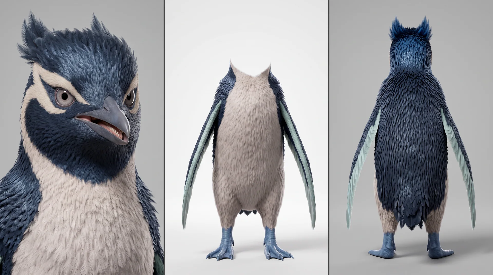
节点：2682a26b-f2bb-428f-ab8f-213c39b19c82
参考图；最终造型待审
节点：71c10be5-a261-48bb-a99e-fd69cee61a18
参考图；最终造型待审
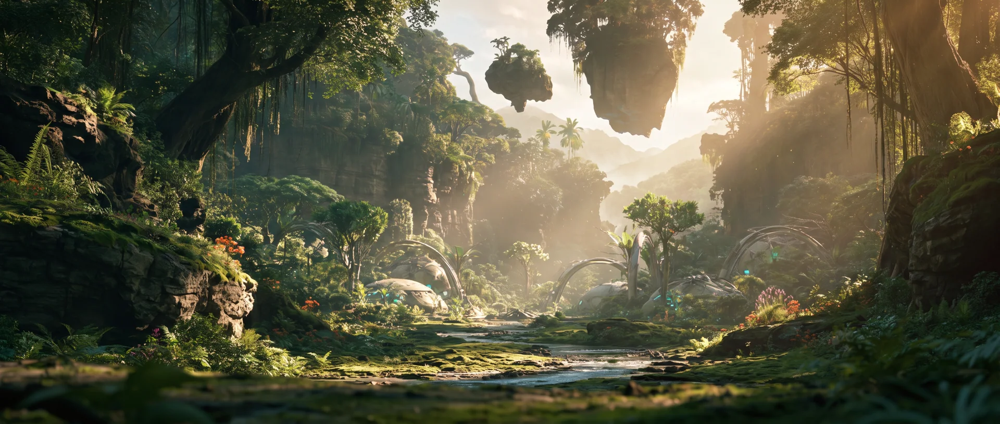
节点：image-1791461913049-hlclpz711
参考图；最终造型待审
节点：8205160e-ec13-49f5-aeaf-2c175df49a39
参考图；最终造型待审
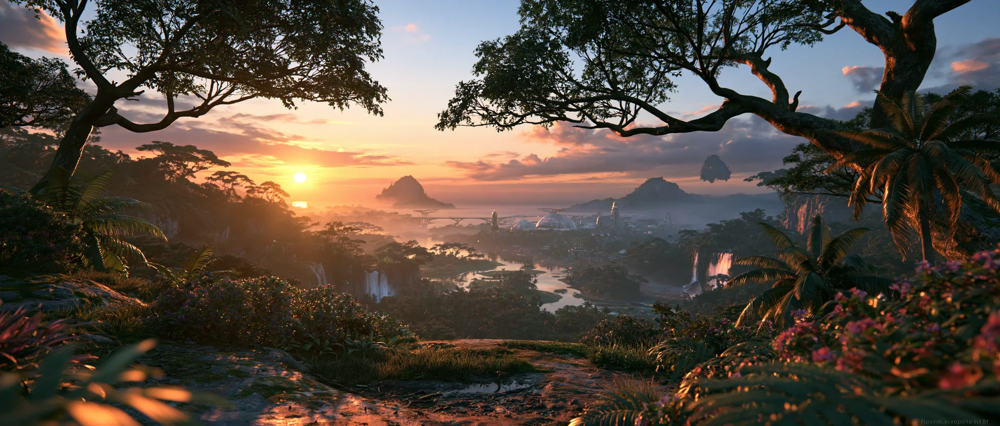
节点：9d38caa7-1b64-490c-bd23-29795ec63668
参考图；最终造型待审

节点：image-1791474802847-r5u505b9d
参考图；最终造型待审
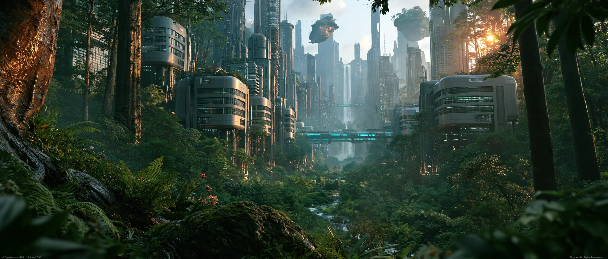
节点：a96ce9a3-375e-430c-be78-f6fb702e66c5
参考图；最终造型待审
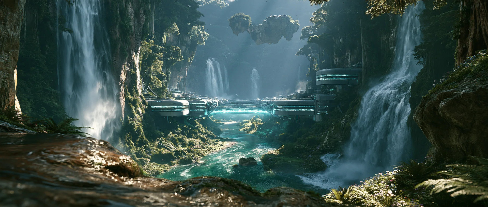
节点：d199f379-8efe-420b-a796-c776242b271d
参考图；最终造型待审
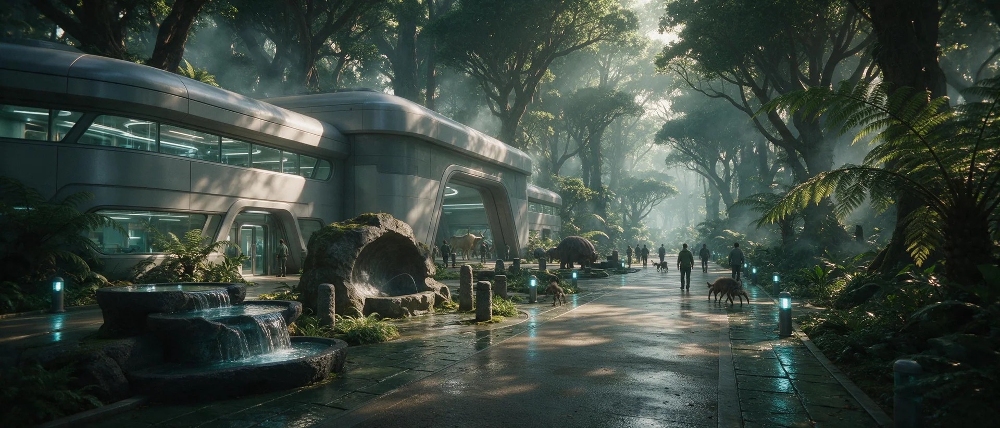
节点：08d7b1ad-d18b-4836-9091-a7103200e761
参考图；最终造型待审
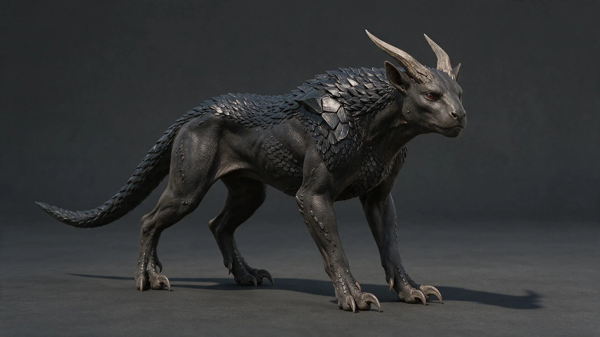
节点：8ce8c148-e26a-46be-b112-258319786cae
参考图；最终造型待审
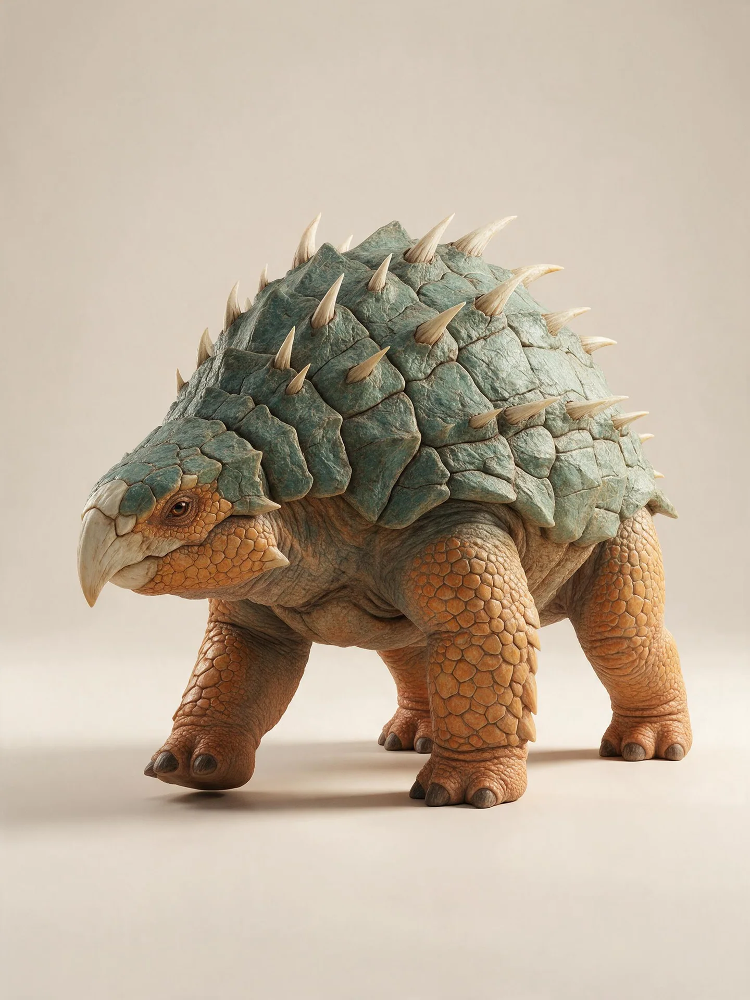
节点：34a71baf-4329-446d-9284-2b378a7a02e0
参考图；最终造型待审
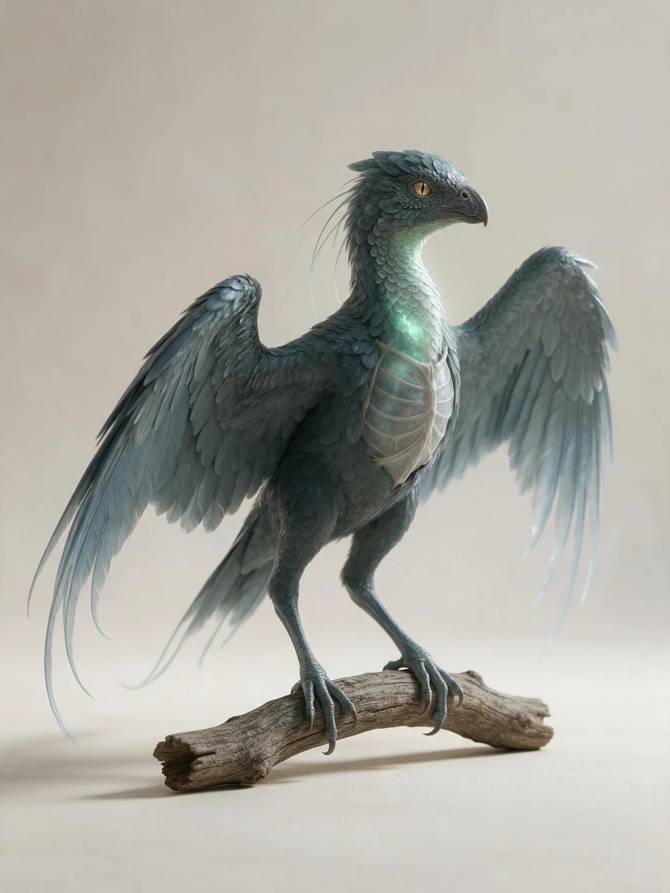
节点：ff0feb9e-3f36-4533-877c-ba6ce31c8be5
参考图；最终造型待审
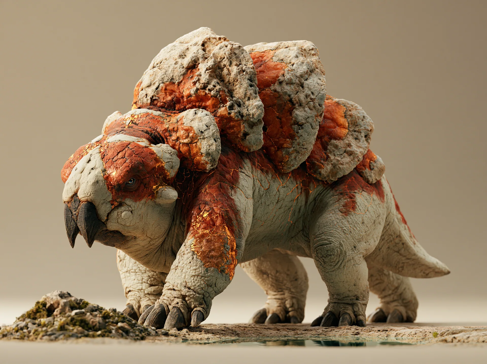
节点：cfd4b78c-ca39-4655-bf74-8ea5bd8426d7
参考图；最终造型待审

节点：fef8d167-b06b-41d5-b4d8-20bc412bd714
参考图；最终造型待审
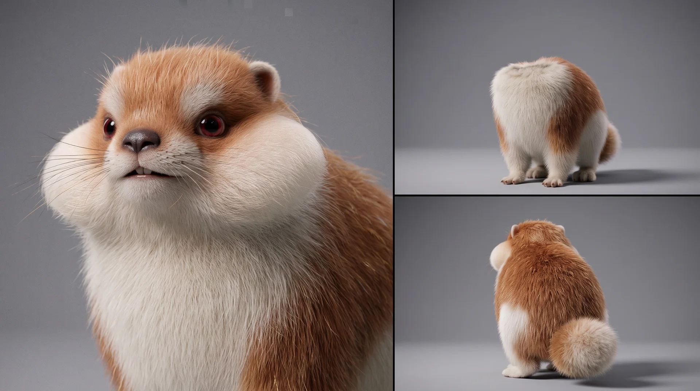
节点：image-1791620965794-pjqg9semx
第一集参考资产缺项：许知微、老陈、顾凛、副手、猎羽、狗／羊原核、誓约手环、巡护车、凝胶罐、孢子弹、重炮，以及林道、乱石滩、峡谷和基地的最终设计图。已有玄岩陀、黑刃提示词，造型仍待确认。分镜草图不能替代角色身份图。查看完整审核说明
6:3:1 比例已确认 · 体量与宽厚兽嘴提示词已调整，造型及色区待审
单只成年巨型异星四足生物，电影写实 CG，体长约7米、体宽约2.6米、肩高约3.5米，完整全身三分之四侧视，浅象牙背景。躯干前后舒展而厚重，肩背宽厚，玄武岩断层纹理的厚重背甲、倒生骨刺与承担巨大体重的石柱般厚鳞四肢，关节与皮肤褶皱可信。吻部宽厚、前端钝圆，上下颌厚实，闭口形成自然横向口裂，角质嘴缘贴合颌骨并顺接脸颊。天然固有色按可见体表面积 6:3:1 分配：60% 青碧覆盖上部厚甲和头部；30% 杏橙覆盖四肢、下颊与体侧下部；10% 奶油白覆盖骨刺、角质嘴缘和前腿外侧较宽的鳞斑。色区边界清楚，粗糙鳞片与自然深浅变化保留。闭口、低头，一只脚缓慢迈出短步，身体平稳，眼神沉稳，眼睛不发光。摄影机左侧窗口明亮自然柔光，保留清楚的中间调与接触阴影。全身、骨刺和足部完整入画，四周留边距。无下钩尖喙、文字、标志、水印、烟气、动漫或卡通表现。
Single colossal adult alien quadruped, cinematic realistic CG, 7m long, 2.6m wide, 3.5m at shoulder. Full-body three-quarter side view on pale ivory. Long heavy torso, thick shoulders, basalt-layer back armor, backward bone spikes, load-bearing scaly pillar legs, joints and skin folds. Broad blunt muzzle, thick jaws, natural horizontal mouth seam, keratin rims flush with jawbones blending into cheeks. Native body colors 60:30:10: turquoise upper armor and head; apricot-orange legs, lower cheeks and lower flanks; cream spikes, mouth rims and broad outer-foreleg patches. Rough scales, tonal variation, clear color zones. Mouth closed, head low, one short slow step, level body, calm non-glowing eyes. Bright soft window daylight from camera left, clear midtones, contact shadows. Entire body with margins --v 8.2 --ar 3:2 --raw --s 200 --no text logos watermarks smoke anime cartoon hooked beak
第06组首次见到玄岩陀时，腹腔深处已有暖金色能量光，经腹侧自然甲缝透出，随喘息明灭，撞壁瞬间增强；光被厚实身体遮挡，局部映亮相邻甲片边缘与近身地面。第11组喷雾降温后减为残留微光，后续交战维持，落入谷底后接原稿失序金光。它属于本集异常状态，不作为生物天然发光能力或本体配色；不透视内脏、不露实体原核、不提前形成体外光环或神盾。
状态图待制作；基准造型与配色仍待审。
6:3:1 比例已确认 · 造型与具体色区待确认
单只异星豹型猎兽，电影写实 CG，完整全身三分之四侧视，浅象牙背景。长而运动型的躯干，短而有力的颈部、水平脊背、收紧腰部、强健肩胛与后腿；头部保持近肩高度。宽掌垫、短曲爪，平滑的肌肉长尾。天然固有色按可见体表面积 6:3:1 分配：60% 孔雀蓝覆盖皮肤主区与紧密的黑曜石质肩背甲；30% 奶油白覆盖下颌、喉、胸腹、两侧下半身和两枚低位后掠的扁刃骨角；10% 珊瑚色覆盖面颊至颈侧的斑块与尾端。轻量同色相胸部护具保留关节自由。细密皮肤纹理、哑光骨质与矿质甲片边缘清楚。闭口，视线向前，前脚稍错开。摄影机左侧窗口明亮自然柔光，清楚的接触阴影。骨角、足部和尾巴完整入画，四周留边距。无长颈、蹄足、翅膀、文字、标志、水印或卡通表现。
Alien feline predator, cinematic realistic CG. Full body, three-quarter side view on pale ivory. Long athletic torso, short muscular neck, level spine, tucked waist, strong shoulders and haunches; head near shoulder height. Broad padded paws, short curved claws, long smooth muscular tail. Native visible body colors in a 60:30:10 ratio: 60% peacock-blue hide and compact obsidian-like shoulder/back plates; 30% cream lower jaw, throat, chest, belly, lower flanks and two low-set backward flat bone blades; 10% coral cheek-to-neck patches and tail tip. Light same-hue chest guards leave joints free. Fine skin grain, matte bone, mineral edges. Mouth closed, eyes forward, staggered forepaws. Bright soft window daylight from camera left, contact shadows. Entire horns, paws and tail visible with margins --v 8.2 --ar 3:2 --raw --s 200 --no long-necks hooves wings text logos watermarks cartoon
6:3:1 比例已确认 · 造型与具体色区待确认
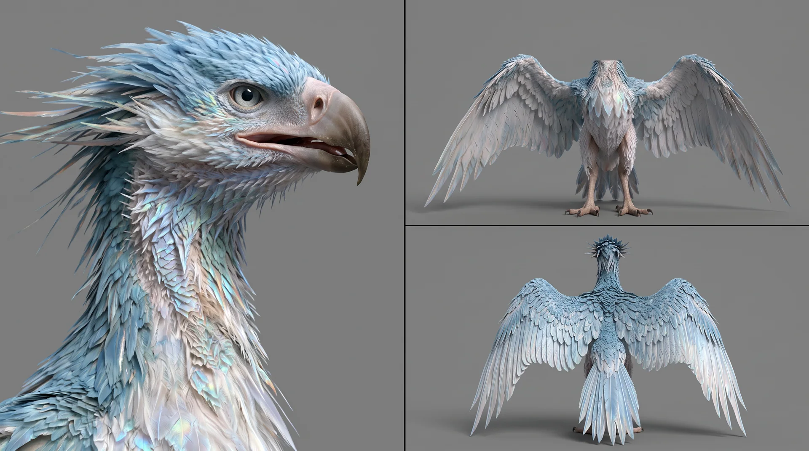
单只翼展约两米的异星飞行生物，电影写实 CG，完整全身三分之四侧视，浅象牙背景与一小段无文字的粗糙屋檐梁和天然枝段。身体修长，具有两条细长抓握足、宽长翼、短而坚实的喙；半透明胸腔共鸣骨板位于胸部中央，喉部有细密发光鳞羽，翼尖生有柔软感知羽。天然固有色按可见体表面积 6:3:1 分配：60% 青绿覆盖头部、躯干和翼面主区；30% 银蓝覆盖宽阔外翼羽区与胸部；10% 青翠覆盖喉环和成片翼尖羽区。三种颜色形成清楚的大色块，自然羽毛明暗归入对应色相；共鸣结构只发低强度同色微光。真实分层羽毛，眼睛清楚但不夸张，闭口，身体停在屋檐梁与枝段交界处，头部侧向观察远处而非看向镜头，足部保持可随时起飞的自然抓握，身体与边缘保留安全距离。摄影机左侧窗口明亮自然柔光，清楚呈现羽毛、胸板与接触阴影。双翼、双足、喉部和胸部完整入画，四周留边距。无项圈、誓约手环、服装、人工喂食、手部接触、文字、标志、水印、烟气、动漫或卡通表现。
Single alien flying creature, cinematic realistic CG. Full body, three-quarter side view on pale ivory, a small roof beam and branch edge. Two-meter wingspan, slender body, two long gripping feet, broad wings, short sturdy beak; translucent resonant chest plate, luminous throat scales, sensory wingtip feathers. Native visible colors in a 60:30:10 ratio: 60% teal head, torso and main wings; 30% silver-blue outer wings and chest; 10% green-cyan throat ring and wingtip patches; faint same-hue glow. Layered real feathers, clear eyes, mouth closed, perched at the edge, head watching a distant direction, feet ready for flight. Bright soft window daylight from camera left, contact shadows. Entire wings, feet, throat and chest visible with margins --v 8.2 --ar 3:2 --raw --s 200 --no collar clothing hand-contact text logos watermarks cartoon
6:3:1 比例已确认 · 造型与具体色区待确认
单只接近小型工程车体型的异星四足生物，电影写实 CG，完整全身三分之四侧视，浅象牙背景与简洁地热工坊展示区；背景只保留一小堆无文字矿质苔藓、一处浅冷却水池和宽阔可退让空间。身体低矮厚重，四条短粗承重肢、宽钝鼻端、厚实前肢掘土爪和贴身短尾符合真实承重结构。背部六块自然生长的热交换甲板呈粗糙矿质结构。天然固有色按可见体表面积 6:3:1 分配：60% 铜橙覆盖六块背甲、上部躯干和头部；30% 浅陶土色覆盖四肢、下颊和体侧下部；10% 琥珀金覆盖较宽甲板边缘与前腿鳞斑。甲缝热纹保持同琥珀金色相的低强度微光，不是火焰。闭口，双眼清楚，身体平稳站立，头部朝向矿质苔藓而非镜头，一前肢停在准备迈步的位置，身体旁边留出明显休息和离开路线；没有任何负载或束缚。摄影机左侧窗口明亮自然柔光，呈现甲板层次、皮肤褶皱、矿物食物和接触阴影。头部、四肢、全部六块甲板和短尾完整入画，四周留边距。无武器、炮管、机械背包、缰绳、项圈、货物负载、文字、标志、水印、火焰、烟气、动漫或卡通表现。
Single small-vehicle-sized alien quadruped, cinematic realistic CG. Full body, three-quarter side view on pale ivory, a geothermal workshop with a mineral-moss pile and cooling pool. Low heavy body, four short legs, broad blunt muzzle, thick digging claws, short tail. Six heat-exchange back plates, rough mineral texture. Native colors in a 60:30:10 ratio: 60% copper-orange plates, upper torso and head; 30% pale clay legs, lower cheeks and flanks; 10% amber-gold plate rims and foreleg patches; faint amber seam lines, no fire. Mouth closed, eyes toward the mineral food, not camera; one foreleg paused before a slow step, open route beside the body, no restraint. Soft window daylight from camera left, contact shadows. Head, legs, all six plates and tail visible with margins --v 8.2 --ar 3:2 --raw --s 200 --no weapons reins collar cargo text logos watermarks flames smoke cartoon
6:3:1 比例已确认 · 造型与具体色区待确认
单只约半米长的日常型异星生物，电影写实 CG，完整全身三分之四侧视，浅象牙背景与一小段无文字的居民门槛、共生饮水池边缘和低矮暖石台。身体低矮圆厚，覆盖短而密的绒毛，短而有力的四肢、宽软足垫与短粗蓬松尾符合真实承重结构；圆头、贴头小耳、短鼻保持自然骨骼比例，两侧自然生长半透明储热颊囊，背部有数条细窄生物荧光纹。天然固有色按可见体表面积 6:3:1 分配：60% 蜜棕覆盖头背、体侧主区与短尾；30% 奶油白覆盖下颌、胸腹、体侧下部与四肢内侧；10% 暖金覆盖颊囊、前腿外侧毛斑与背纹。颊囊与背纹只发低强度同色相暖光。闭口，双眼清楚，身体略微避开镜头，头部侧转安静观察，四足站在饮水池边缘但保留一条明显退路；没有人的手靠近。摄影机左侧窗口明亮自然柔光呈现毛层、颊囊和足底接触阴影。头部、四肢、短尾、颊囊完整入画，四周留边距。无服装、项圈、誓约手环、道具、伸手抚摸、攻击姿态、火焰、文字、标志、水印、动漫或卡通表现。
Single half-meter-long everyday alien creature, cinematic realistic CG. Full body, three-quarter side view on pale ivory, a residential threshold by a drinking pool and warming stone. Low round body, short dense fur, short strong legs, soft paw pads, short fluffy tail. Round head, close-set ears, short muzzle, translucent cheek heat pouches, back glow lines. Native colors at 60:30:10: 60% honey-brown head, back, flanks and tail; 30% cream lower jaw, chest, belly and inner legs; 10% warm-gold cheek pouches, foreleg patches and back lines; faint same-hue glow. Mouth closed, eyes clear, body avoiding camera, head turned, clear retreat route, no hand nearby. Soft window daylight from camera left, contact shadows. Head, legs, tail and pouches visible with margins --v 8.2 --ar 3:2 --raw --s 200 --no clothing collar props reaching-hand attack-pose text logos watermarks cartoon
造型待确认 · 世界观资产视觉探索稿
异星森林中的未来共生街区，电影写实 CG。圆角银灰中层建筑带横向玻璃窗带，沿宽阔通道展开；人类尺度入口与大型生物通行开口分开设置。共生饮水池位于通道边缘，旁边是甲壳清洗区与磨爪石柱；中央通道畅通。少量人类和无拘束的异星生物共同通行，从属于环境，没有角色特写。蕨类、灌木与树木保持自然比例，约为地球同类的 2–3 倍。摄影机在街区入口处，28mm 平视，深景深。维护良好的建筑与公共设施；阳光穿过树冠，深青林荫、湿润石面、青蓝路面灯和柔暖高光。无宝塔、瓦屋顶、穹顶、文字、标志、水印、动漫或卡通表现。
Far-future symbiotic neighborhood in an alien forest, cinematic realistic CG. Rounded silver-gray mid-rise blocks with horizontal glass bands line a broad walkway; human-scale entrances sit beside larger creature passages. A shared drinking pool borders the path, beside a shell-washing bay and claw-rubbing stone pillars; central circulation stays clear. A few small humans and unrestrained alien creatures share the walkway, subordinate to the environment. Naturally proportioned ferns, shrubs and trees are 2-3 times their Earth counterparts. Camera at the street entrance, 28mm eye-level view, deep focus. Maintained buildings and facilities; sunlight through the canopy, deep teal shade, wet stone, cyan path lights and soft warm highlights --v 8.2 --ar 21:9 --raw --s 200 --no pagodas tiled-roofs domes text logos watermarks anime cartoon
造型待确认 · 世界观资产视觉探索稿
风暴侵蚀峡谷中的未来工业边境城，电影写实 CG。连续工厂与居住街区沿受遮护的谷底展开，高架货运轨道连接宽阔维修场。外缘防御支柱之间的能源屏障出现局部闪烁，受损支撑由外加夹架加固；城市仍在运作。压实的灰色合金建筑、密封通道、可用的维修场与正常人类尺度建筑。不聚焦人物。摄影机位于城市上方山脊，24mm 略下俯，深景深覆盖街区直至风暴前沿。冷蓝灰天光照亮金属；琥珀色维修工灯在风吹雨幕中发光。无宝塔、穹顶、废墟、文字、标志、水印、动漫或卡通表现。
Far-future industrial frontier city in a storm-eroded canyon, cinematic realistic CG. Continuous factory and housing districts follow the sheltered valley floor; elevated cargo rails connect broad repair yards. Flickering energy curtains span defense pylons at the exposed perimeter; external braces stabilize damaged supports while the city remains operational. Compact gray alloy buildings, sealed passages, functioning yards, normal human-scale architecture. No character focus. Camera on a ridge above the city, 24mm lens, slight downward tilt, deep focus across districts toward the storm front. Cold blue-gray skylight on metal, amber repair lamps glowing through wind-driven rain --v 8.2 --ar 21:9 --raw --s 200 --no pagodas domes ruins text logos watermarks anime cartoon
造型待确认 · 世界观资产视觉探索稿
手持异星生理巡护扫描平板，道具设计图，电影写实 CG。单件展开的折叠设备放在哑光深灰桌面，45 度俯视，完整入画。三防深灰橡胶包边、防护角、薄铰接支撑边框和青玉色柔性显示面；折痕轻微，可收拢成野外便携尺寸。克制的全息界面显示不含标注的解剖轮廓与生理波形。握持处有轻微磨亮痕迹，连接部位完整。摄影机左侧窗口自然光照出橡胶与显示面的差异，屏幕发出低强度青蓝光。没有文字、标志、水印、符文或武器。
Handheld alien-biology patrol scanner, prop design, cinematic realistic CG. One unfolded folding device on a matte charcoal work surface, 45-degree overhead view, complete object visible. Rugged dark-gray rubber edges, protective corners, thin hinged support frames and a jade flexible display; a subtle fold allows compact field storage. Restrained holographic interface showing unlabeled anatomical silhouettes and physiological waveforms. Slight handling polish on grips, intact connections. Natural window light from camera left reveals rubber and display surfaces, with a low cyan screen glow --v 8.2 --ar 3:2 --raw --s 200 --no text logos watermarks runes weapons
造型待确认 · 世界观资产视觉探索稿
单块神秘古老原核载体，道具设计图，电影写实 CG。掌心尺度的粗糙圆钝琥珀结块放在深灰石质表面，45 度近距离俯视，完整入画，周围留边距。半透明天然树脂包围致密深色矿质核，内部细密弯曲层纹靠近中心交汇。低强度暖金内光照亮细裂纹与不规则树脂壳，边缘保留磨砂质感和夹杂；没有宝石刻面。左侧窗口日光形成宽缓反射、清楚的接触阴影与可信半透明质感。无马形剪影、钟表盘、符文、文字、标志或水印。
Single ancient anomalous core, prop design, cinematic realistic CG. A palm-sized rough rounded amber nodule rests on a dark-gray stone surface, close 45-degree overhead view, entire object visible with margins. Translucent natural resin encloses a dense dark mineral kernel; fine curved internal layers converge toward its center. A restrained warm inner glow reveals hairline fractures and an irregular resin crust, with frosted edges and trapped inclusions, no cut gemstone facets. Daylight from a window on the left creates broad reflections, a clear contact shadow and believable translucency --v 8.2 --ar 3:2 --raw --s 200 --no horse-silhouettes clockfaces runes text logos watermarks
造型待确认 · 第一集主线发动机，玄岩陀误吞后唤醒并展开庇佑神盾；不得以马原核替代。
单块卵圆形原核琥珀，道具设计图，电影写实 CG。深色矿质核包在半透明琥珀树脂里，放在深灰石质表面，45 度近距离俯视，完整入画，周围留边距。内部细密同心层纹被强烈暖金光从核体点亮，光沿层纹向外渗出，边缘树脂壳有磨砂质感与夹杂；周围浮起极淡的金色尘屑，不构成光环或法阵。左侧窗口日光与内光形成冷暖对比，宽缓反射与清楚接触阴影可信。无狗形剪影、无神兽、无人体、无符文、无文字标志、无水印。
A single ovoid core amber, prop design, cinematic realistic CG. A dark mineral kernel enclosed in translucent amber resin rests on dark gray stone, close 45-degree overhead view, entire object visible with margins. Fine concentric internal layers are lit from within by an intense warm gold glow that bleeds outward along the layers; frosted resin crust edges with trapped inclusions, faint gold dust floating around it, no halo or magic circle. Window daylight from the left contrasts cool exterior with the inner warmth, believable broad reflections and a clear contact shadow. No dog silhouette, no deity figure, no human body, no runes, no text, no watermark --v 8.2 --ar 3:2 --raw --s 200 --no dogs animals humans runes text watermarks halos
造型待确认 · 极枢战术持有的意念具象原核，副手扣入前臂装具后具象重炮。
单块扁圆角原核琥珀，道具设计图，电影写实 CG。乳白色矿质核包在半透明琥珀树脂里，放在深灰石质表面，45 度近距离俯视，完整入画，周围留边距。内部平行层纹被柔和乳白神芒从核体点亮，亮度克制，不刺眼、不带金色；树脂壳边缘有磨砂质感与夹杂。左侧窗口日光形成宽缓反射与清楚接触阴影，冷白光与暖日光过渡可信。无羊形剪影、无神兽、无符文、无文字标志、无水印。
A single flattened rounded-corner core amber, prop design, cinematic realistic CG. A milky white mineral kernel enclosed in translucent amber resin rests on dark gray stone, close 45-degree overhead view, entire object visible with margins. Parallel internal layers are lit from within by a restrained milky glow, soft and not glaring, no gold tint; frosted resin crust edges with trapped inclusions. Window daylight from the left gives broad reflections and a clear contact shadow, credible transition between cool white inner light and warm daylight. No ram silhouette, no deity figure, no runes, no text, no watermark --v 8.2 --ar 3:2 --raw --s 200 --no rams goats animals runes text watermarks
细化稿待出图 · 人类左腕契约信物：齐平感应核心、嵌入式环形晶轨与独立侧键；与玄岩陀缔结时亮玄金微光，传送用苍绿光环，告警用血红全息框。
单枚贴合成人手腕的低矮圆形腕环，道具设计图，电影写实 CG。保留简洁厚圆环轮廓，深灰哑光金属外壳与内侧柔性贴合垫，放在浅灰绒面台面。腕背位置嵌入一枚小椭圆形半透明晶质感应核心，表面与环体齐平，核心与侧面按键清楚分开；一道细窄晶轨嵌在环体外侧，沿圆环绕行一周并连接核心。感应核心与环形晶轨透出温润克制的金色微光，晶质内部有细薄分层，不形成大面积光晕。侧面保留一处齐平下压式紧急空间键。前侧四分之三略俯视，同时看清感应核心、环形晶轨和侧键，完整入画并留边距。左侧窗光形成柔和反射与自然接触阴影，哑光金属、柔性内衬和半透明晶质区分清楚。无屏幕、无表盘、无凸起宝石、无外露电路、无人物手腕、无全息框、无文字、无符文、无标志、水印。
A low-profile circular wrist band sized for an adult, prop design, cinematic realistic CG. Simple rounded dark gray matte metal shell, soft inner contact liner, on light gray felt. A small oval translucent crystal sensor sits flush on the wrist-top face, separate from the side button. A narrow inset crystal track encircles the outer band and joins the sensor. Sensor and track emit a restrained warm gold glow, fine internal crystal layers, no halo. One flush emergency push key on the side. Slightly elevated three-quarter front view shows sensor, encircling track and key, entire band visible with margins. Window daylight from the left, soft reflections and contact shadows, distinct metal, liner and crystal. --v 8.2 --ar 3:2 --raw --s 200 --no screens dials raised-gems exposed-circuits wrists holograms text runes logos watermarks
正式外观已确认 · 2026-10-15用户指定；对折双屏、中央单铰链、顶部扫描镜组与钛灰外壳。尺寸仍为工作估尺。
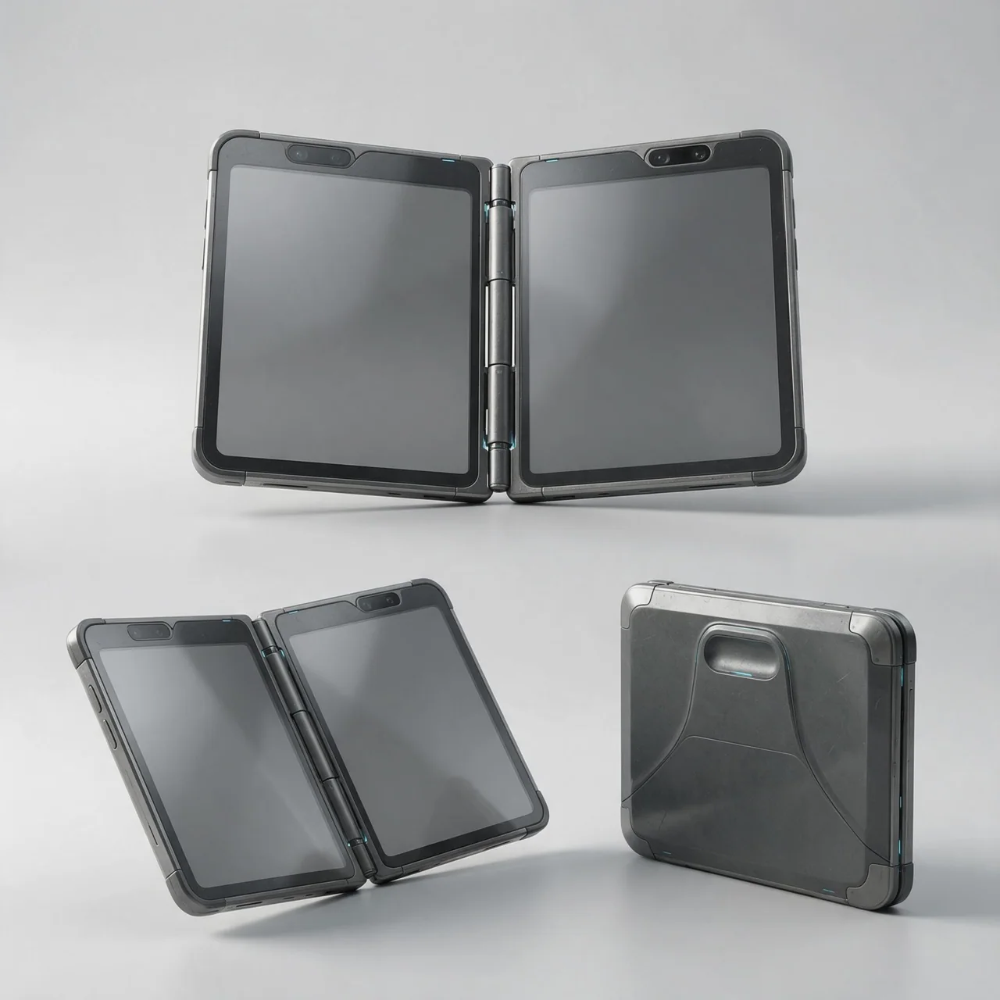
折叠双屏电子手记，道具设计展示图，电影写实CG。同一款设备的三个视图：上方为展开正面，下方左侧为展开斜侧，下方右侧为折叠后的背面，结构与材质一致。 书册式横向展开结构，由左右两半机身与中央一条精密分节铰链组成；两块独立圆角屏面分别嵌入左右机身，合拢时两屏面对面。哑光钛灰金属骨架与深灰复合外壳，窄边框、薄型护角。两半机身的顶部边框均嵌有齐平的小型深色扫描镜组；壳体接缝内仅有少量纤细、微弱的青蓝指示光。背壳上部有浅凹握持位，浅弧形结构分缝顺应握持位置，表面保留细微使用磨损。整体具有克制、实用的未来科技感。 所有屏幕均为完全空白的均匀深灰色表面，仅保留柔和反光，无文字、数字、图标、波形、图像或数据界面。浅灰无缝背景与台面，左上方大型柔光灯照明，接触阴影自然，设备完整入画，四周留白。纯净无标注，无人物、手部、标志、水印或悬浮投影。
Prop design presentation of a book-style folding dual-screen electronic field journal, cinematic realistic CG. Three consistent views of the same device: unfolded front view above, unfolded three-quarter view at lower left, folded rear view at lower right. Two matching halves open horizontally like a book and connect through one precision segmented central hinge. Each half contains its own separate rounded rectangular display; the two screens face each other when closed. Matte titanium-gray metal frame, dark-gray composite shell, narrow bezels and thin corner guards. A small dark scanning lens cluster sits flush within the top bezel of each half. A few fine, dim cyan indicator strips are recessed into the housing seams. A shallow grip recess sits near the top of the rear shell, with shallow curved panel seams and subtle surface wear. Restrained, practical futuristic engineering. Every screen is completely blank and uniformly dark gray, with soft reflections only; no text, numbers, icons, waveforms, images or interface elements. Light-gray seamless backdrop and tabletop, large softbox lighting from upper left, natural contact shadows, complete objects with generous margins, unlabeled presentation --v 8.2 --ar 1:1 --raw --s 200 --no text logos watermarks holograms
名称、用途及结构方向已确认 · 用户提供外观候选图待审；组08已作本地道具参考，未上传平台。
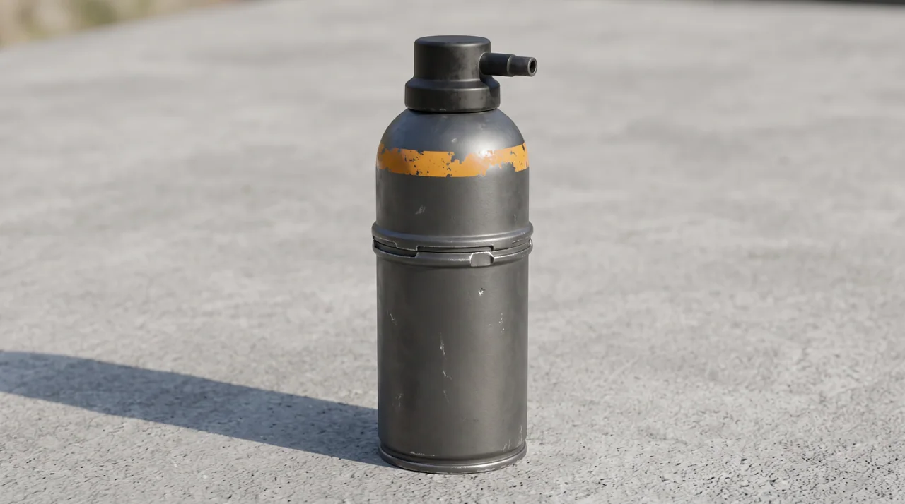
单支便携压力喷雾罐，道具设计图，电影写实 CG。深灰哑光金属罐体放在浅灰水泥台面，正侧面平视，完整入画，周围留边距。圆柱形罐体可单手握持，中段一道加压环缝，顶部有宽大的按压阀和向前伸出的短喷嘴，罐肩一圈磨损的橙黄色警示带，无图案无文字。罐身保留户外携带的细磨白与轻微凹痕，接缝与收口清楚。左侧柔光形成宽缓反射与清楚接触阴影，哑光金属与磨损漆面区分明显。无人物手、无喷射物、无白汽、无符文、无文字标志。
A single portable pressure spray canister, prop design, cinematic realistic CG. Matte dark-gray metal body rests on light gray concrete, straight side view, entire object visible with margins. A cylindrical body sized for one-handed use, one pressurization seam ring at mid-body, a broad push-down valve on top and a short forward-facing nozzle, a worn amber-yellow warning band around the shoulder, no pattern or text. Fine carry scuffs and slight dents, clear seams and crimped edges. Soft light from the left gives broad reflections and a clear contact shadow, matte metal distinct from worn paint. No human hands, no spray, no vapor, no runes, no markings --v 8.2 --ar 3:2 --raw --s 200 --no hands spray mist runes text symbols
造型待确认 · 刺激无防护生物的单枚弹丸，爆开紫雾。
单枚卵圆形小型弹丸，道具设计图，电影写实 CG。哑光深紫褐色外壳放在浅灰石质表面，45 度近距离俯视，完整入画，周围留边距。外壳有细密的生物质感裂纹，裂纹里渗出极淡的紫光，表面无引信、无电路、无金属件，比鸡蛋略小。左侧柔光形成宽缓反射与清楚接触阴影，哑光外壳与微光裂纹对比自然。无人物手、无爆开物、无紫雾、无符文、无文字标志。
A single small ovoid spore round, prop design, cinematic realistic CG. Matte dark purple-brown shell rests on light gray stone, close 45-degree overhead view, entire object visible with margins. Fine organic fissures run across the shell, leaking a faint violet glow; no fuse, circuitry or metal parts, slightly smaller than an egg. Soft light from the left gives broad reflections and a clear contact shadow, matte shell contrasting naturally with the faintly glowing fissures. No human hands, no explosion, no purple mist, no runes, no markings --v 8.2 --ar 3:2 --raw --s 200 --no hands explosions mist runes text symbols
造型待确认 · 第一集出现最多的人物道具（33镜），紧凑无托防卫枪。
单支紧凑无托防卫枪，道具设计图，电影写实 CG。深灰哑光枪体放在浅灰水泥台面，正侧面平视，完整入画，周围留边距。聚合物机匣与护木为一体护罩，肩撑贴腮板向后折收，顶部一段低矮瞄轨无光学镜，握把与扳机护圈清晰，弹匣井略向前倾。护木与握把有日常携带的细微磨白，接缝与螺丝孔可见，无图腾、无符文、无文字标志。左侧柔光形成宽缓反射与清楚接触阴影，金属件偏冷、聚合物偏哑。无人手、无弹匣外露、无枪口焰、无弹道。
A single compact bullpup defensive rifle, prop design, cinematic realistic CG. Matte dark-gray polymer body rests on a light gray concrete surface, straight side view, entire object visible with margins. Chassis and handguard form one smooth shroud; folding buttplate collapsed, a short low-profile rail with no optic, pistol grip and trigger guard clear, magazine well angled slightly forward. Subtle carry wear on handguard and grip, visible seams and screw holes, no engravings, runes or markings. Soft light from the left gives broad reflections and a clear contact shadow; metal parts read cool, polymer matte. No human hands, no exposed magazine, no muzzle flash, no bullet path --v 8.2 --ar 3:2 --raw --s 200 --no hands engravings runes text logos muzzle-flash bullet-trails
造型待确认 · 羊原核具象的两米级重炮，专注中断即溃散。
单具两米高短粗厚重的意念具象重炮，道具设计图，电影写实 CG。白金色折面炮体以三分之四正面角度立在深灰岩石地面，完整入画并留出边距，炮身高度约为整体宽度的两倍，避免细长枪管比例。前端是明显厚实的多层同心圆炮口，炮口后方连接粗壮的中段能量腔；中段有一道横向能量脊，底部是三点展开、贴地稳定的光刃底座。炮体像抛光白金陶瓷与冷白能量融合而成，折面清楚，边缘微微透光，内部只有连续的乳白能量，不出现机械管线、弹链、座舱、外露螺栓或复杂机械缝隙。炮口中心保持暗部，不发射；顶部一枚小型火控指示点微微亮起。左上方大型柔光照亮炮体折面，冷白能量在炮身内部提供克制的自发光，并在岩石地面形成清楚接触阴影。无人物、无手臂、无羊形剪影、无符文、无文字标志、无弹道、无枪械细长比例。
A single two-meter-tall, short and heavy manifested energy cannon, prop design, cinematic realistic CG. Ivory-gold faceted cannon stands on dark gray rock in a front three-quarter view, fully visible with generous margins; its height is about twice its overall width, never a thin rifle-like barrel. A thick layered concentric muzzle dominates the front, connected to a robust central energy chamber with one transverse ridge; a three-point spread light-blade base holds it firmly against the ground. The body looks like polished ivory-gold ceramic fused with cool white energy, with clear broad facets and faintly translucent edges; only continuous milky energy appears inside, with no pipes, belts, cockpit, exposed bolts or complex mechanical gaps. The muzzle center stays dark and does not fire; one small fire-control indicator on top glows faintly. A large soft light from upper left illuminates the facets, while restrained internal cool-white emission creates a clear contact shadow on the rock. No people, hands, arms, ram silhouette, runes, text, bullet path or slender firearm proportions --v 8.2 --ar 3:2 --raw --s 200 --no people hands arms pipes belts cockpit bolts runes text muzzle-flash bullet-trails rifle
造型待确认 · 副手承载羊原核的前臂护甲，扣入后透乳白神芒。
单段包覆前臂的哑光护甲，道具设计图，电影写实 CG。深灰哑光装具放在浅灰绒面台面，正侧面平视，完整入画，周围留边距。内侧一条可开合的装载槽，槽缘一圈扣锁齿；原核扣在槽内，槽缝透出柔和乳白神芒，亮度克制。装具表面无屏幕、无电路外露，接缝与扣锁齿纹清楚，有户外携带的细磨白。左侧柔光形成宽缓反射与清楚接触阴影，哑光护甲与槽内神芒区分明显。无人手、无手臂、无重炮、无符文、无文字标志。
A single forearm armor segment, prop design, cinematic realistic CG. Matte dark-gray mount rests on light gray felt, straight side view, entire object visible with margins. A closable loading slot runs along the inner side with a ring of locking teeth; a core sits in the slot, a restrained milky glow seeping through the seam. No screen or exposed circuitry, clear seams and locking teeth, fine carry scuffs. Soft light from the left gives broad reflections and a clear contact shadow, matte armor clearly distinct from the glow in the slot. No hands, no arm, no cannon, no runes, no markings --v 8.2 --ar 3:2 --raw --s 200 --no hands arms cannons runes text symbols
正式外观已确认 · 横屏战术Pad、蓝灰机壳、银灰护角、基准纯黑屏；左前臂背侧绑固、抬臂查看、右手操作已确认；20×13×2厘米仍为工作估尺，前臂适配尺寸待确认。
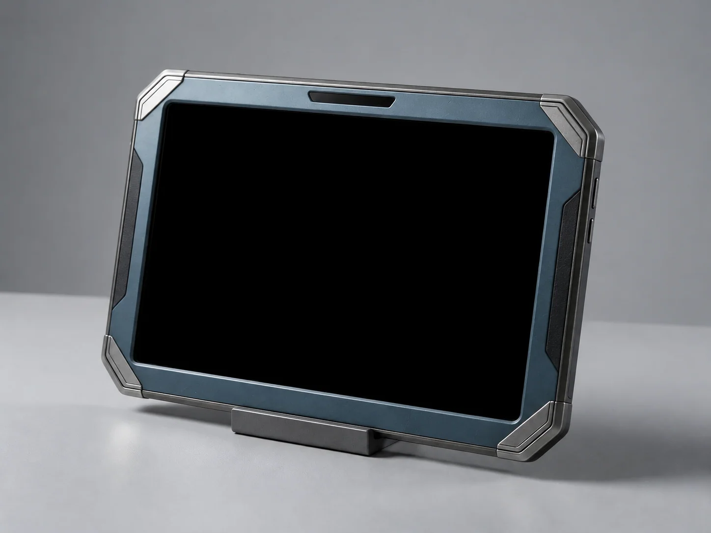
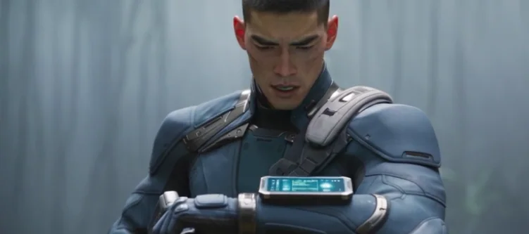
设计依据：副手装备风格参考；旧定位仪结果（未采纳）。竖屏参考（待横屏调整）；横屏正式参考已确认。
单台横屏战术定位平板，道具设计图，电影写实 CG。机身宽约二十厘米、高约十三厘米、厚约二厘米，宽边水平，薄型切角矩形，正面宽高比约3:2，大屏占据正面大部分面积，两端保留窄握持边。低饱和蓝灰哑光机壳，枪灰金属边框，四角嵌入小块银灰切角护片；护片分层搭接、接缝细密，背侧黑色防滑握持区。正面大块齐平烟黑玻璃，整个显示区域为均匀纯黑色，屏幕关闭，无指针、扫描环、刻度、亮点、文字、数字、图标或界面；上方长边中央嵌入窄条黑色传感窗，右侧握持边设两枚低矮长条按键。单件横向放在浅灰台面，背侧由低矮展示托轻抬，屏幕朝向镜头；三分之四正面微俯视，宽幅正面与右侧薄边清楚，完整入画并留边。左上大型柔光箱照出金属护片边缘与接触阴影，屏幕无自发光或渐变。机壳只有少量细微使用痕迹。无人物、手、文字、标识、水印、机械钟盘、大旋钮、外伸天线或悬空投影。
A single landscape tactical locator tablet, prop design, cinematic realistic CG. Body 20 cm wide, 13 cm high, 2 cm thick; long edges horizontal, thin chamfered tablet silhouette, roughly 3:2 front proportions. A large landscape screen fills most of the face, with narrow grip margins at both ends. Matte muted blue-gray shell, gunmetal frame, small layered silver-gray corner armor plates, precise seams, black textured rear grip. The entire display inside the flush smoked-black glass is uniformly pure black, powered off: no needles, scan arcs, ticks, dots, text, numbers, icons or interface. A narrow black sensor window sits at the center of the upper long bezel; two low-profile elongated buttons on the right grip. The single tablet rests horizontally on a light-gray tabletop, rear slightly raised by a low display support, screen facing camera. Three-quarter front view from slightly above, showing the wide face and thin right edge, entire object visible with margins. A large upper-left softbox lights plate edges and contact shadows; the screen emits no light and has no gradient. Subtle handling marks --v 8.2 --ar 3:2 --raw --s 200 --no people hands text logos watermarks clockfaces knobs antennas holograms
本集停用候选 · 当前副手不使用目镜；保留世界观探索稿。
单眼侧挂式战术目镜，道具设计图，电影写实 CG。深灰哑光镜壳放在浅灰绒面台面，正侧面平视，完整入画，周围留边距。一块略突出的深色镜片，镜壳上缘一条细散热槽，侧壁一枚调焦拨轮，挂架为一段柔性带，无显示屏、无电路外露。镜片有极淡的冷色反光，不显示画面内容。机壳有户外携带的细磨白，接缝与拨轮齿纹清楚。左侧柔光形成宽缓反射与清楚接触阴影。无人脸、无人手、无测算画面、无数字文字、无符文标志。
A single monocular side-mounted tactical optic, prop design, cinematic realistic CG. Matte dark-gray housing rests on light gray felt, straight side view, entire object visible with margins. One slightly protruding dark lens, a thin cooling slot along the upper edge, a focus dial on the side wall, and a flexible strap mount; no display screen, no exposed circuitry. The lens carries a faint cool reflection but shows no image. Fine carry scuffs, clear seams and dial teeth. Soft light from the left gives broad reflections and a clear contact shadow. No face, no hands, no overlay graphics, no digits, no runes --v 8.2 --ar 3:2 --raw --s 200 --no faces hands hud graphics text runes
造型待确认 · 坡底面杀伤弹，一次气浪造成多项可见后果。
单枚短粗筒形弹体，道具设计图，电影写实 CG。深灰哑光金属壳放在浅灰水泥台面，正侧面平视，完整入画，周围留边距。头部一圈定向聚能环，环上开四道矩形导能槽；尾部四片收折的稳定翼，无引信外露、无电路、无图案文字。壳有户外携带的细磨白与轻微磕痕，接缝与收口清楚。左侧柔光形成宽缓反射与清楚接触阴影，哑光金属与环内深色导能槽区分明显。无人物手、无脉冲、无气浪、无符文、无文字标志。
A single stubby cylindrical munition, prop design, cinematic realistic CG. Matte dark-gray metal shell rests on light gray concrete, straight side view, entire object visible with margins. A directional focusing ring around the head carries four rectangular energy slots; four folded stabilizing fins at the tail, no exposed fuse, no circuitry, no pattern or text. Fine carry scuffs and light impacts, clear seams and crimped edges. Soft light from the left gives broad reflections and a clear contact shadow, matte metal clearly distinct from the dark slots. No human hands, no pulse, no shockwave, no runes, no markings --v 8.2 --ar 3:2 --raw --s 200 --no hands shockwaves pulses runes text symbols
受控施救路线已采用 · 外观、独立停电与机械束网结构待审
单张大型柔性捕捉索网，道具设计图，电影写实 CG。深灰金属编织索构成疏朗菱形网格，加粗外缘自然卷曲，近侧一处圆角硬壳供能扣与掀起式机械拨杆清楚可辨。网以松弛展开状态铺在无缝浅灰地面，略高的45度视角，完整入画、四周留边，能够读出轻薄索体与厚实扣件的尺度差异。左侧窗光形成细小金属反射和接触阴影，保留编织与磨痕。断电状态，不画电弧；无人物、动物、发射器、文字、标注、箭头、水印或拼版。
One large flexible capture net, prop design, cinematic realistic CG. Dark gray braided metallic cables form an open diamond mesh with a thicker flexible perimeter. One rounded hard-shell power coupler with a hinged mechanical release lever is clearly visible near the front edge. The entire net lies loosely unfolded on a seamless light gray floor, viewed from a slightly elevated 45-degree angle with margins. Fine lightweight cables contrast with the thicker coupler. Window light from the left creates small metallic reflections and contact shadows, revealing braid texture and light scuffs. Unpowered, no electrical arcs. No people, animals, launcher, text, labels, arrows, watermark or collage --v 8.2 --ar 3:2 --raw --s 200
造型待确认 · A线主力载具，含完好与翻入深沟的残骸两版。
单辆方正高底盘越野车，道具设计图，电影写实 CG。深灰绿哑光车漆停在泥泞林道地面，正侧面平视，完整入画，周围留边距。车顶一组可拆装装备架，前保险杠内嵌两组照明灯，车侧一组备用油箱，深色玻璃，轮眉外扩配全地形轮胎。车漆有户外使用的细划痕与泥点，接缝与螺丝孔清楚。左侧林间天光形成宽缓反射与清楚接触阴影，泥地留下新鲜车辙。无人物、无文字标志、无车牌、无编号、无旗帜。
A single boxy high-clearance off-road vehicle, prop design, cinematic realistic CG. Matte dark gray-green paint stands on a muddy forest track, straight side view, entire vehicle visible with margins. A removable roof equipment rack, two lights recessed in the front bumper, a spare fuel canister on the side, dark glass, flared wheel arches with all-terrain tires. Fine scratches and mud specks across the paint, clear seams and screw holes. Forest daylight from the left gives broad reflections and a clear contact shadow, fresh tire tracks in the mud. No people, no text, no license plate, no numbers, no flags --v 8.2 --ar 3:2 --raw --s 200 --no people text plates numbers flags
The same off-road vehicle in a wrecked state, cinematic realistic CG. Body rests on its side between a gravel slope and rock, matte dark gray-green paint covered in dust and gravel, roof equipment rack deformed and detached, one bumper light shattered, dark windshield cracked radially, one wheel arch peeled back with a flat tire, frame visibly twisted. Forest daylight from the left gives broad reflections and contact shadows. No people, no text, no license plate, no numbers, no fire, no smoke --v 8.2 --ar 3:2 --raw --s 200 --no people text plates numbers fire smoke
造型待确认 · 开场投送平台，机腹挂两枚重型索降舱。
单架巡航战机，道具设计图，电影写实 CG。冷灰哑光机体侧向悬在铅灰雷云天光中，正侧面平视，完整入画，周围留边距。翼身融合的菱形主翼，机腹一对挂架接点，机头上方一组传感器窗，尾喷口为简单矩形开口；机体无徽记、无编号、无涂鸦。金属表面有高空飞行的细微磨白与气流擦痕，接缝与检修口清楚。侧上方天光形成宽缓反射，机体与云层保持清楚纵深。无人物、无武器挂载、无文字标志、无编号、无弹道。
A single high-altitude cruise aircraft, prop design, cinematic realistic CG. Cool gray matte airframe hangs side-on in leaden thunderhead light, straight side view, entire aircraft visible with margins. Blended diamond main wing, one pair of hardpoint fittings under the fuselage, a sensor window above the nose, simple rectangular exhaust outlets; no insignia, no numbers, no graffiti. Subtle high-altitude wear and airflow scuffs across metal surfaces, clear seams and access panels. Light from the upper side gives broad reflections, the airframe holding clear depth against the clouds. No people, no weapons, no text, no numbers, no bullet path --v 8.2 --ar 3:2 --raw --s 200 --no people weapons text numbers bullet-trails
造型待确认 · 简式圆筒载人舱，出图工作尺度高约6米、外径约3米，舱门净高约3.5米／净宽约1.6米；宽厚端环、齐平高舱门、嵌入检修区与局部冰蓝锁扣灯，尺度定调待审。基准图闭舱，剧情保留挂架投放、泥潭着陆与开舱。
@道具_重型索降穿梭舱_MJ提示词.md · 用户圆筒造型参考 · 用户当前生成参考（尺度调整前）
风格锁定：电影级写实3D CG，真实金属材质与自然光。 造型锁定：单枚冷灰金属载人投放舱，竖立总高约6米、外径约3米，高径比约2:1；略加长的粗壮等径圆筒，直筒侧壁，两端平钝。上下端缘各有一道宽厚的分段加固环，少量纵向宽扁扣件紧贴筒壁，筒身保留大块平整金属表面。侧面一扇净高约3.5米、净宽约1.6米的高舱门，门板贴合圆筒弧面，闭合后与外壳齐平；门缝连续清楚，四角轻微斜切，铰链隐藏。门旁嵌入窄幅深灰检修区，小型黑色感应窗与几枚低亮冰蓝锁扣指示灯集中在此。上端附近设置浅凹挂接槽，下端留少量短排气缝。端环与门框有清楚的金属厚度，表面呈克制的缎面反光，边缘有细微加工纹理和轻微使用磨损。 展示画面：单枚舱体闭舱竖立在灰色机库地面，排气阀静止。略低机位三分之四侧视，舱门、门旁检修区与圆筒侧壁同时可见，完整入画并留边距。后方不远处保留一扇约2.1米高的普通机库检修门，同一地面、相近景深，舱体明显约为检修门高度的三倍，体现大型工业装备的尺度。左侧高窗自然光照出圆筒曲面渐变与地面接触阴影，其余机库背景简洁。 限制：保持简单圆筒轮廓，纯净无标注画面；无人物、武器、尾翼、尖头、外露机械、环绕灯带、喷汽、文字、标志或水印。
Style lock: cinematic realistic 3D CG, credible metal and natural light. Shape lock: a single stout, slightly elongated cool-gray metal cylinder, approximately 6 meters tall and 3 meters in outer diameter, height-to-diameter ratio 2:1, straight parallel sides and flat blunt ends. Broad segmented reinforcement collars at both ends, a few flat longitudinal clamps close to the hull, large uninterrupted metal surfaces. A side hatch with a clear opening approximately 3.5 meters high and 1.6 meters wide follows the curved hull and closes flush, with a clear continuous seam, subtly clipped corners and concealed hinges. A narrow recessed dark-gray service panel beside the hatch contains a small black sensor window and a few dim icy-blue lock indicators. A shallow docking socket near the upper end, short vents near the bottom. Substantial metal thickness at collars and door frame, satin reflections, fine machining and light edge wear. Display: one closed pod upright on a gray hangar floor, vents inactive. Slightly low three-quarter view showing the hatch, service panel and cylindrical side together, entire object with margins. A standard 2.1-meter-tall hangar service doorway stands a short distance behind on the same floor at a similar depth; the pod rises roughly three times its height, clearly conveying large industrial scale. Daylight from a high window on the left reveals the curved metal surface and grounded contact shadow, otherwise simple hangar background. Clean unmarked presentation, simple cylindrical silhouette --v 8.2 --ar 3:2 --raw --s 200 --no people weapons fins pointed-nose exposed-machinery neon-rings steam text logos watermarks
造型待确认 · 钩子一压境编队，三架挂重型空投舱。
单架挂载重型空投舱的倾转翼战机，道具设计图，电影写实 CG。冷灰哑光机体侧向悬在峡谷天光中，正侧面平视，完整入画，周围留边距。翼尖一对可倾转旋翼舱，机腹一对重型挂点接驳大型货舱，机背上一条通信天线脊；机体无徽记、无编号。货舱表面有户外装卸的磨白与擦痕，接缝与挂点锁口清楚。侧上方天光形成宽缓反射，机体与峡谷绝壁保持清楚纵深。无人物、无旋翼转动模糊、无文字标志、无编号、无弹道。
A single tiltrotor aircraft carrying a heavy drop pod, prop design, cinematic realistic CG. Cool gray matte airframe hangs side-on in canyon daylight, straight side view, entire aircraft visible with margins. A pair of tiltrotor nacelles at the wingtips, two heavy hardpoints under the fuselage mated to a large cargo pod, one communications antenna spine along the back; no insignia, no numbers. Carry scuffs and handling marks across the pod, clear seams and hardpoint locks. Light from the upper side gives broad reflections, the aircraft holding clear depth against the canyon wall. No people, no rotor blur, no text, no numbers, no bullet path --v 8.2 --ar 3:2 --raw --s 200 --no people rotor-blur text numbers bullet-trails
造型待确认 · 钩子三锁定平台，猩红探照灯罩住师徒。
单架紧凑四旋翼无人平台，道具设计图，电影写实 CG。深灰哑光机体悬停在树冠上方天光中，正侧面平视，完整入画，周围留边距。四臂末端为旋翼舱，机腹一组传感器与一枚可俯仰的猩红探照灯，探照灯已点亮并向下投出光锥；机背一块电池舱。机体无徽记、无编号。外壳有户外使用的细磨白，接缝与旋翼舱锁口清楚。侧上方天光形成宽缓反射，探照灯光只从灯体实际位置发出。无人物、无旋翼转动模糊、无文字标志、无编号、无武器外露。
A single compact quadcopter platform, prop design, cinematic realistic CG. Matte dark-gray airframe hovers in daylight above a forest canopy, straight side view, entire object visible with margins. Rotor pods at the ends of four arms, a sensor cluster and one tilting scarlet searchlight under the body, the searchlight lit and casting a cone downward; a battery pack on the back. No insignia, no numbers. Fine carry scuffs, clear seams and pod locks. Daylight from the upper side gives broad reflections, the searchlight beam emitting only from its actual position. No people, no rotor blur, no text, no numbers, no visible weapons --v 8.2 --ar 3:2 --raw --s 200 --no people rotor-blur text numbers weapons
造型待确认 · S1B 开场高空环境，铅灰雷云与茫茫雾海
万米高空的铅灰雷云与下方雾海，电影写实 CG。铅灰雷云在上半部翻滚如铁，云体层理分明、边缘有受光轮廓，云隙间偶见更深的暗核；下方一片茫茫雾海，雾面平整、能见度极低，只在边缘露出云影与微弱的天光反射。摄影机在万米高空侧前方平视，24mm 固定，深景深，云层在上、雾海在下，画面保持水平稳定。清晨冷灰天光从侧上方照入，云体受光面偏冷灰、背光面沉暗，雾海反光克制；高空大气让远处云缘逐渐柔化。无战机、无舱体、无人物、无武器、无文字、无标志、无水印。
Leaden thunderheads and a fog sea at ten thousand meters, cinematic realistic CG. Leaden thunderclouds churn like iron across the upper frame with distinct layering and lit edges, deeper dark cores showing between gaps; below lies a vast flat fog sea with very low visibility, cloud shadows and a faint daylight reflection only at its margins. Camera side-on at high altitude, 24mm fixed, deep focus, clouds above and fog sea below, the frame held level and steady. Cool morning daylight enters from the upper side, cloud lit faces cool gray, shadowed faces sunk dark, restrained reflections on the fog sea; high-altitude air softens distant cloud edges--no aircraft pods people weapons text logos watermarks
造型待确认 · S1A 开场环境，A 线师徒日常的林道与路边哨卡
异星森林中的泥泞林道与路边哨卡，电影写实 CG。泥泞林道从画面左方向右方延伸，地面有坑洼、泥浆与新鲜车辙，路面倒影着树冠；两侧植物保持地球近似同类 2–3 倍，半透明菌伞幽蓝发光，低处蕨类沿路面边缘铺开。路边一处简陋巡护哨卡，由简易棚架、低矮标识与一盏照明组成，不设围墙或关卡；棚架下可见一只搁置的旧水壶与折叠凳，暗示有人日常驻守。远处林道在林荫中渐隐。摄影机在路边正常人眼高度，28mm 平视，深景深。清晨天光穿过树冠斜入，深青林荫、湿润泥面与柔暖高光形成冷暖层次，空气中浮着细微水汽。无人物、无生物、无载具、无文字、无标志、无水印、无动漫卡通表现。
A muddy forest track with a roadside patrol post on an alien world, cinematic realistic CG. The muddy track runs from the left into the distance with potholes, mud and fresh tire tracks, the surface mirroring the canopy; plants on both sides keep 2-3 times Earth proportions, translucent mushroom caps glowing faint blue, low ferns spreading along the road edge. A crude patrol post by the road consists of a simple canopy frame, a low marker and one lamp, no walls or gate; an old canteen and a folding stool rest under the canopy, hinting at daily presence. The track fades into shade in the distance. Camera at roadside eye level, 28mm level view, deep focus. Morning light rakes through the canopy, deep teal shade, wet mud and soft warm highlights in cool-warm layering, fine mist hanging in the air--no people creatures vehicles text logos watermarks anime cartoon
造型待确认 · 组1／组5落点，湿地边缘的坚实林间空地
异星森林沼泽边缘的一片坚实林间空地，电影写实 CG。湿树冠围出中央开阔地，压实土面铺着薄层落叶，树根分布在边缘；低洼湿地与少量积水位于空地外侧，不占据中央落点。一条林缘小径从空地通向远处花岗岩断崖。蕨类、灌木与树木保持地球近似同类 2–3 倍自然比例，稀薄晨雾位于树干之间，中央地表清楚可见。摄影机在空地边平视，28mm 固定，深景深，完整展示落点与林缘路径。清晨冷灰天光穿过树冠，从侧上方照清土面、落叶与湿枝。无人物、无生物、无载具、无舱体压痕或投放痕迹、无文字、无标志、无水印。
A firm forest clearing at the edge of an alien swamp, cinematic realistic CG. Wet canopy surrounds open compact soil with a thin leaf layer; exposed roots frame the edges. Low wetland and small pools sit beyond the clearing, leaving its center firm and open. A forest path leads toward a distant granite cliff. Ferns, shrubs and trees keep 2-3 times Earth proportions. Thin morning mist hangs between trunks; the central ground stays clearly visible. Eye-level camera at the clearing edge, fixed 28mm, deep focus showing the clearing and exit path. Cool morning daylight enters from the upper side through the canopy, revealing soil, leaves and wet branches. No pod press marks or landing traces--no people creatures vehicles text logos watermarks
地表已确认采用坚实石地与碎石；机位、布局与造型仍待图审，图片待添加。
电影写实CG环境定调图，高空鸟瞰大全景，接近垂直俯拍。摄影机位于乱石滩中央偏南上空约120米，明显高于周围树冠，20mm广角，镜头相对水平面向下75度，距垂直向下仅15度，深景深。完整乱石滩及四周边界同时入画，碎石空地占画面约四分之三，周围树冠仅沿画面边缘分布；画面全部由地面、岩石和树冠构成，不出现天空与地平线。从上方看清石台顶面、连续石地通路、石地凹处轮廓、沟口和一侧岩壁的空间关系。中央是大片横向展开的连续坚实石地，散布细碎石粒与局部低洼石地，保留宽松的活动净空，较大岩块主要集中在外围，中央偏左保留平缓坚实的石地。左侧林缘是一块高于石滩的宽阔天然石台，死树桩与粗壮巨木根立在台地边缘，台面平缓宽裕，中央偏左的平缓停车石地与中央偏右崖脚的兽侧石地连续相接，只在兽头前保留局部浅凹处，浅凹旁有一丛粗壮巨蕨；石台后侧紧邻一道边缘不规则的自然深沟，沟口有足够宽度容纳整辆越野车，沟底低于台面。右后侧立着一段高耸宽厚的花岗岩崖壁，完整岩面直抵石滩边缘，崖脚碎岩旁留有大片石地；崖顶巨树伸出粗壮树杈，树杈悬在崖脚石地上方。前景与右前方的石质地面平缓连续展开，向远处林缘自然过渡。石台、深沟与岩壁集中在场地外围，中央石滩保持开阔。巨木、蕨类与灌木沿远处林缘生长，约为地球同类的2–3倍，保持自然植物比例。清晨象牙金阳光照亮石滩与岩面，深青蓝林荫、远林淡紫蓝灰薄雾，地形清楚可辨。纯净无人空场景，无生物、车辆、武器、建筑、车辙、血迹、爆炸、炮击坑、坍塌烟尘、文字、标注或水印。
Cinematic realistic CG, very high aerial bird's-eye extreme wide shot, near-vertical overhead view. Camera about 120 meters above the south-central clearing, well above surrounding treetops, 20mm wide lens pointing 75 degrees below horizontal, 15 degrees off straight down, deep focus. The entire clearing and all boundaries fit in frame; open rocky ground fills roughly three quarters, tree crowns frame only the edges. Ground, rocks and treetops fill the image, no sky or horizon. Clearly reveal terrace tops, continuous level rocky paths, shallow rocky hollows, the gully mouth and one rock wall. A broad forest-edge clearing with a continuous firm stone surface, scattered fine gravel and shallow depressions; larger rocks stay peripheral and the center-left remains level. Left: a broad natural stone terrace above the clearing, dead stump and massive roots at its edge. The level parking area at center-left connects directly across the same continuous stone surface to the cliff-foot area at center-right, with only a local shallow rocky hollow and giant ferns beside it. A deep natural gully behind the terrace is wide enough for an off-road vehicle, its floor well below the terrace. Rear-right: a tall substantial granite cliff rises directly beside the clearing, intact rock face and rubble at its foot. A giant crest tree extends thick branches above the cliff-foot stone ground. Foreground and front-right remain broad gently graded rocky ground transitioning into forest. Terrain changes stay peripheral, central ground spacious. Forest plants 2-3 times Earth size, natural proportions. Ivory-gold morning sun, deep teal-blue forest shade, thin lavender-gray mist only in distant trees. Firm rocky terrain throughout, no mud or puddles --v 8.2 --ar 21:9 --raw --s 200 --no people creatures vehicles weapons buildings tire-tracks battle-damage mud puddles text labels watermarks
造型待确认 · S4／S5 主场地，近百米湿滑绝壁堵住去路
异星荒原中的绝壁峡谷底部，电影写实 CG。近百米高的湿滑绝壁从三面围合谷底，壁面有水流痕与苔藓；谷底是烂叶坑、水洼与蕨类丛，右前侧一道光滑绝壁封死去路。蕨类与灌木保持地球近似同类 2–3 倍自然比例。摄影机在谷底南侧略高，24mm 平视，深景深，绝壁占画面上部、谷底在下部。清晨散射天光从峡口上方照入，谷底偏暗，湿岩与蕨叶带水气，水洼有克制反射。无人物、无生物、无载具、无力场、无文字、无标志、无水印。
The floor of a sheer-walled canyon on an alien plain, cinematic realistic CG. Hundred-meter wet cliffs enclose the valley floor from three sides with water streaks and moss; the floor holds leaf litter pits, puddles and fern clusters, a smooth cliff face sealing the forward path on the right. Ferns and shrubs keep 2-3 times Earth proportions. Camera at the valley floor south side slightly raised, 24mm eye-level, deep focus, cliffs in the upper frame and floor below. Morning scattered light enters from the canyon mouth above, the floor stays dim, wet rock and fronds carry moisture, restrained reflections in the puddles --v 8.2 --ar 21:9 --raw --s 200 --no people creatures vehicles forcefields text logos watermarks
造型待确认 · S5H2 室内场地，中央泥浆池与弧形穹顶
正常人类尺度的弧形穹顶温室内部，电影写实 CG。中央一座泥浆池，池岸为压实泥径与石沿，泥面平静；池周是发光植物与养护棚架，一侧设监控台。半透明穹顶透入清晨天光，池面有克制反射。蕨类与发光植物保持地球近似同类 2–3 倍自然比例。摄影机在池岸，28mm 平视，深景深，穹顶在上、泥池在下。清晨天光从穹顶透入，冷灰天光与植物微光形成层次，微光只由已设结构产生。无人物、无生物、无传送光幕、无金光、无文字、无标志、无水印。
The interior of a human-scale domed ecological greenhouse, cinematic realistic CG. A central mud pool fills the middle with a compacted mud path and stone rim, the surface calm; glowing plants and cultivation frames around the pool, a monitoring console to one side. The translucent dome admits morning daylight with restrained reflections on the pool. Ferns and glowing plants keep 2-3 times Earth proportions. Camera at the pool bank, 28mm eye-level, deep focus, dome above and pool below. Morning light through the dome, cool gray daylight layered with restrained plant glow, emission only from established structures --v 8.2 --ar 21:9 --raw --s 200 --no people creatures teleport-glow golden-light text logos watermarks
造型待确认 · S5H2 城市级后果，全城跳闸与屏障失效
异星森林中的共生城市外围高位视角，电影写实 CG。圆角银灰中层建筑沿坡地分层展开，横向玻璃窗带与连接桥清楚；建筑外围一道由发光植物构成的屏障带沿地形蜿蜒。城市中心上方可见生态基地穹顶。蕨类与树木保持地球近似同类 2–3 倍自然比例。摄影机在城市外围高位，24mm 平视，深景深。清晨天光穿过林冠，深青林荫、淡紫蓝灰水雾与柔暖象牙金天光形成冷暖层次，窗灯保持日常照明状态。无人物、无生物、无火光、无警报光源、无文字、无标志、无水印。
An outlying high vantage over a symbiotic city in an alien forest, cinematic realistic CG. Rounded silver-gray mid-rise buildings terrace along the slope with clear horizontal glass bands and connecting bridges; a barrier band of glowing plants winds along the terrain outside the blocks. The ecological base dome is visible above the city center. Ferns and trees keep 2-3 times Earth proportions. Camera at the outskirt high point, 24mm eye-level, deep focus. Morning light through the canopy, deep teal shade, pale violet-blue-gray mist and soft warm ivory-gold daylight in cool-warm layering, window lights in everyday state --v 8.2 --ar 21:9 --raw --s 200 --no people creatures fire alarm-lights text logos watermarks
地表已确认采用坚实石地与碎石；机位、布局与造型仍待图审，图片待添加。
峡谷上方的碎石林坡深沟，电影写实 CG。碎石坡面从画面右方向左下方倾斜，坡上有一条深沟，沟内留有车体压痕与细碎石粒，压痕旁散落碎玻璃与折断枝条；坡面被反复踩踏，留下跪撑与拖拽的碎石划痕。坡上有树冠低垂的异星林木，树干粗壮、表面湿润，远处可见峡谷边缘的绝壁与谷底雾气。蕨类、灌木与树木保持地球近似同类 2–3 倍自然比例。摄影机在林坡残骸横侧，24mm 略低平视，深景深，树冠在上、坡面在下。清晨天光斜落坡面，深青林荫、石面与柔暖高光形成冷暖层次，地面仅有碎石与尘土，不设置泥路、泥浆或水洼。无人物、无生物、无载具、无无人机、无探照灯光束、无文字、无标志、无水印。
A rocky forest slope with a gully above a canyon, cinematic realistic CG. The gravel slope falls from the right toward the lower left, with a deep gully, vehicle impact marks and loose stone chips inside it, broken glass and snapped branches beside one mark. Kneeling and dragging have disturbed dust and gravel. Low-canopy alien trees with thick damp trunks cover the slope; sheer canyon walls and valley mist remain visible in the distance. Ferns, shrubs and trees keep 2-3 times Earth proportions. Camera beside the wreck slope, 24mm slightly low eye-level, deep focus, canopy above and slope below. Morning light rakes firm rocky ground, deep teal shade and soft warm highlights. No mud or puddles --v 8.2 --raw --s 200 --no people creatures vehicles drones searchlight-beams mud puddles text logos watermarks
独立2D角色探索，未确认纳入第一集
以企鹅为原型的原创浅海幻想生物，约 1.8 头身，大圆头与小圆身；面部两侧自然生长的浅青气囊鼓起，使头部比身体更宽，极短鳍、短尾、小蹼足。低位深蓝大圆眼、小橙喙，好奇而略受惊的表情。密实平滑羽毛、半透明颊囊薄膜，深海蓝背部、奶白腹部、橙色喙足。单脚保持平衡，身体侧倾，双鳍轻张。单角色、全身完整未裁切、四分之三视角、白色背景居中。完整配色的 2D 手绘角色概念稿，自然铅笔与墨线、清晰剪影、干净色块、轻微线条质感。排除服装、道具、文字、水印、水彩、水粉、晕染、厚涂、3D、CGI、玩具感和写实摄影。
An original penguin-inspired shallow-sea creature, 1.8 heads tall, oversized round head and tiny round body, two inflated pale-cyan cheek sacs growing from its face, making its head wider than its body, tiny flippers, short tail and small webbed feet. Large low-set dark-blue eyes, tiny orange beak, curious startled expression. Dense smooth feathers, translucent cheek membranes, ocean-blue back, creamy white belly, orange beak and feet. Balancing on one foot, body tilted, flippers spread. Single full-body character, uncropped, three-quarter view, centered on pure white. Fully colored 2D hand-drawn character concept, natural pencil and ink outlines, clear silhouette, clean flat colors, subtle line texture --no clothes props text watermark watercolor gouache paint-bleed impasto 3D CGI toys photography --niji 7 --style raw --ar 3:4 --s 150
独立2D角色探索，未确认纳入第一集
以企鹅为原型的原创寒海幻想生物，约 3.5 头身，小头与流线躯干，镰形长鳍垂至踝部、单片后掠羽冠、短尾与蹼足，形成箭矢般的轮廓。狭长银灰眼睛、细尖喙、上挑白色脸纹，表情冷静警觉。墨蓝密羽、银白腹部、冰青鳍缘，鳍尖为平滑原生角质。身体前倾、双鳍后掠、一脚蹬地。单角色、全身完整未裁切、四分之三视角、白色背景居中。完整配色的 2D 手绘角色概念稿，自然铅笔与墨线、清晰剪影、干净色块、轻微线条质感。排除服装、道具、文字、水印、水彩、水粉、晕染、厚涂、3D、CGI、玩具感和写实摄影。
An original penguin-inspired cold-sea creature, 3.5 heads tall, small head and streamlined body, long sickle-shaped flippers reaching its ankles, a single swept-back feather crest, short tail and webbed feet, an arrow-like silhouette. Narrow silver-gray eyes, slender pointed beak, upward white cheek markings, calm alert expression. Dense ink-blue feathers, silver-white belly, icy-cyan flipper edges with smooth natural keratin tips. Leaning forward, flippers swept back, one foot pushing off. Single full-body character, uncropped, three-quarter view, centered on pure white. Fully colored 2D hand-drawn character concept, natural pencil and ink outlines, clear silhouette, clean flat colors, subtle line texture --no clothes props text watermark watercolor gouache paint-bleed impasto 3D CGI toys photography --niji 7 --style raw --ar 3:4 --s 150
森林城市参考方向，布局与最终定调图待审
异星河谷中的辽阔未来森林城市，电影化写实 CG。连续街区沿河谷两侧坡地展开，开放溪流走廊保留；青蓝照明的交通桥连接带横向玻璃窗带的圆角浅灰银白中层建筑。建筑维护良好，交通设施正常运作。机位在抬高的林坡上，18mm 镜头略向下俯拍，深景深横看城市与遥远瀑布。树木、灌木、蕨类与花卉约为地球近似同类正常尺寸的 2–3 倍，保持自然结构；建筑按正常人类使用尺度表现。几座岩石空岛悬浮于树冠上方。暖色逆光穿过树叶，深青林荫、蓝灰瀑布水雾、湿润树皮和苔藓岩石。无宝塔、庙宇、瓦屋顶、穹顶、行星、孢子光尘、漂浮粒子、人物、动物、生物主体、文字、标志、水印、动漫或卡通表现。
Expansive far-future forest city in an alien river valley, cinematic realistic CG. Continuous districts follow both valley slopes, leaving the stream corridor open; cyan-lit transit bridges connect rounded silver-gray mid-rise blocks with horizontal glass bands. Maintained buildings, functioning transit. Elevated forest-slope viewpoint, 18mm lens, slight downward tilt, deep focus across the city toward distant waterfalls. Trees, shrubs, ferns and flowers are 2-3 times their Earth counterparts, naturally proportioned; buildings are human scale. A few rocky islands hover above the canopy. Warm backlight through leaves, deep teal shade, blue-gray waterfall mist, wet bark and mossy stone --v 8.2 --ar 21:9 --raw --hd --s 200 --chaos 30 --no pagodas temples tiled-roofs domes planets spores particles people animals creatures text logos watermarks anime cartoon
分镜确认后，用这里建立人物、机位与空间的连续关系。
极简鸟瞰关系候选：老陈已下车、面对许知微，车辆位于他自身右手侧；许在中下，顾凛与副手在左上石台。玄岩陀头朝右上靠崖，带刺尾巴朝左下空地。图中省略黑刃与猎羽，仅供核对站位，不替换正式分镜。
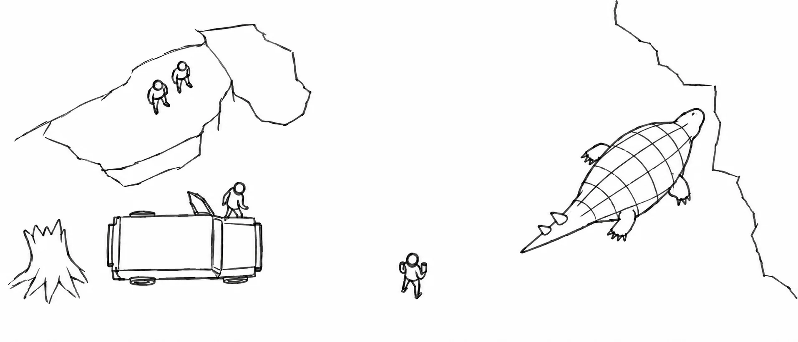
空间待确认，暂不生成正式调度图。先确认本片主线事件、分镜、机位与具体场地布局。
确定拍摄地点与时间段。
确定人物与道具在同一空间中的位置和移动方向。
按每个连续镜头确认机位、视线和可拍范围。
先确认每镜文字与分镜图，再建立人物、道具和机位的空间关系。
正式建立后核对场地与时间、人物和道具位置、机位与视线、运动方向及连续镜头关系。
正反打、换端、交替近景和异地通话两端必须拆开，不能合并成一个物理空间。